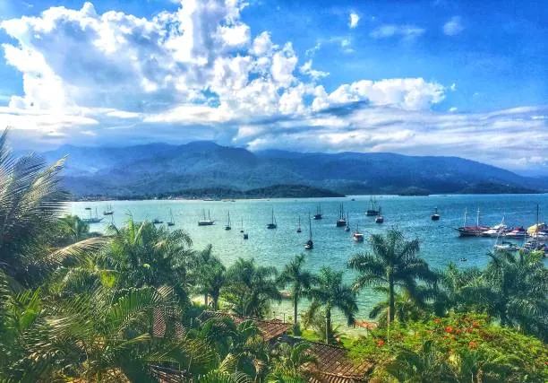

A FLIP é um dos maiores e mais importantes festivais literários do Brasil e da América Latina.
Site oficial do evento
A FLIP (Festa Literária Internacional de Paraty) é um festival literário anual realizado desde 2003 na cidade histórica de Paraty, Rio de Janeiro. Criada pela editora britânica Liz Calder, é considerada o maior evento literário do Brasil, reunindo escritores brasileiros e internacionais em palestras, debates e oficinas. Também tem programação especial para crianças (Flipinha) e jovens (Flipzona). A próxima edição, a 24ª, acontece de 22 a 26 de julho de 2026.
A Festa Literária Internacional de Paraty (FLIP) é o maior e mais importante festival literário do Brasil e da América Latina, realizado anualmente desde 2003 na charmosa cidade histórica de Paraty, no litoral do Rio de Janeiro.
Foi criada pela editora britânica Liz Calder, cofundadora da famosa editora Bloomsbury Publishing, que vivia no Brasil e usou como inspiração o Hay Festival do Reino Unido. A festa nasceu de um longo processo de valorização cultural da cidade, iniciado nos anos 1990.
Reúne grandes nomes da literatura brasileira e internacional em mesas de debate, palestras, oficinas literárias e lançamentos de livros. A programação principal conta com tradução simultânea, interpretação em Libras e audiodescrição, garantindo acessibilidade a todos.
Além da programação principal, oferece a Flipinha (para crianças) e a Flipzona (para jovens). O evento também disponibiliza transporte gratuito para moradores de comunidades próximas e transmite toda a programação ao vivo e gratuitamente pelo YouTube e pelo canal Arte1.
É reconhecida como Patrimônio Histórico, Cultural e Imaterial tanto da cidade de Paraty quanto do Estado do Rio de Janeiro. Ao longo dos anos, ajudou a projetar autores brasileiros no exterior e trouxe ao Brasil escritores internacionais renomados, inclusive ganhadores do Prêmio Nobel de Literatura.
A próxima edição, a 24ª, acontece de 22 a 26 de julho de 2026, com homenagens à escritora brasileira Clarice Lispector e à autora americana Toni Morrison, ambas reconhecidas por suas contribuições literárias e culturais.
A Festa Literária Internacional de Paraty (Flip) é um dos maiores e mais importantes eventos culturais do Brasil, reunindo milhares de amantes da literatura, autores renomados e pensadores de todo o mundo.
A cada edição, a histórica cidade de Paraty, Patrimônio Mundial da UNESCO, se transforma em um palco vibrante para o debate, a celebração e a difusão da literatura em suas múltiplas formas.
Durante a Flip, as ruas de Paraty se enchem de vida, com uma programação diversificada que inclui mesas de debate, palestras, oficinas literárias, lançamentos de livros e atividades para crianças e jovens.
A Flip é um espaço onde a palavra ganha vida, onde as ideias fluem e onde a literatura é celebrada em toda a sua diversidade.
A Flip celebra grandes nomes da literatura brasileira e internacional, reconhecidos por suas contribuições culturais e artísticas.
A edição de 2023 da Festa Literária Internacional de Paraty (FLIP) foi dedicada a Patrícia Galvão, conhecida como Pagu,
A Festa Literária Internacional de Paraty convida você a fazer parte desta celebração vibrante da palavra, da ideia e do pensamento. Acompanhe as próximas edições e descubra novos horizontes literários!
Acesse o site do evento